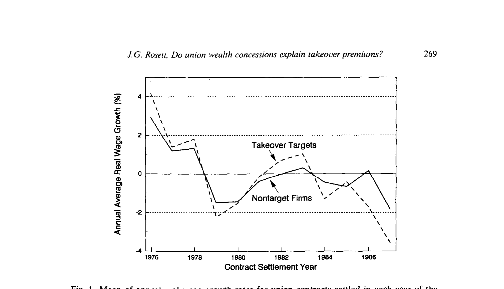
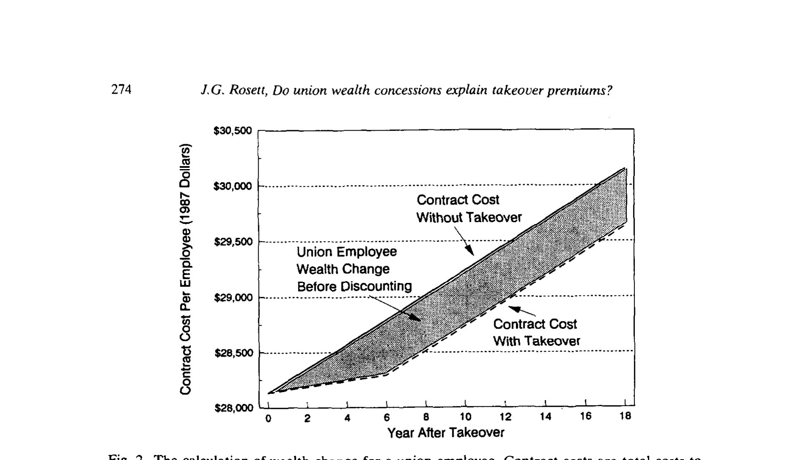
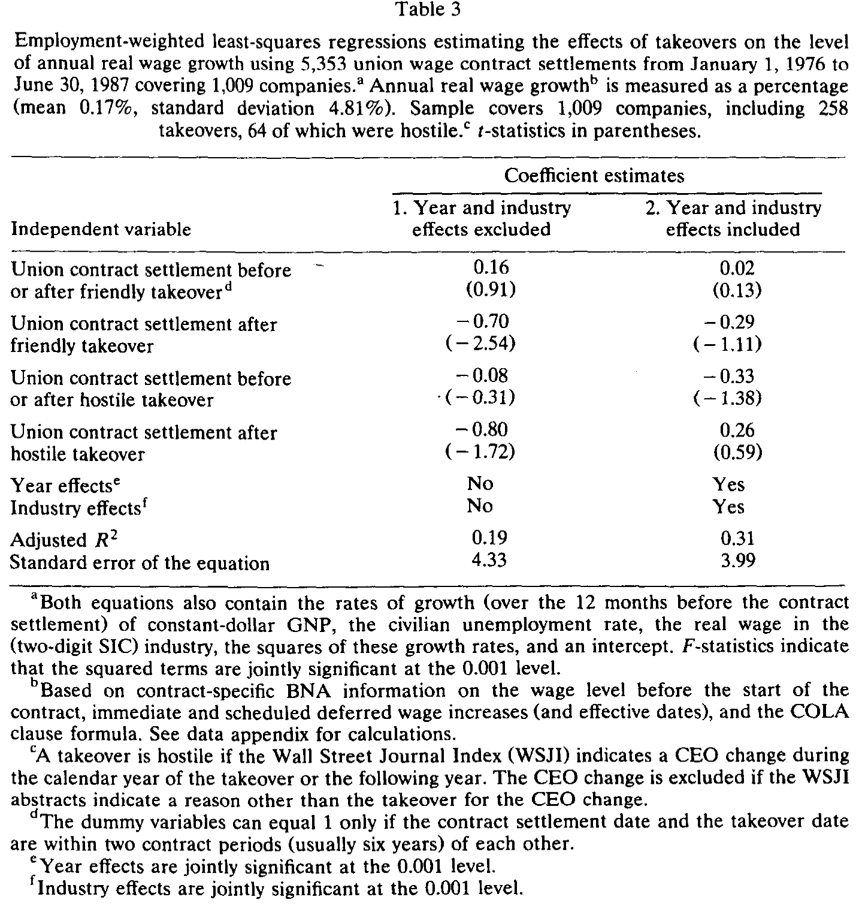
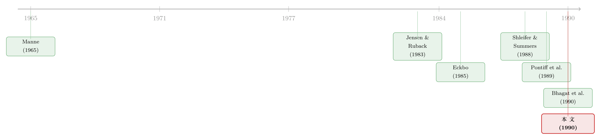

拆掉一家公司，能从工人工资里省出那笔「收购溢价」吗？
本文读的是 Rosett (1990, Journal of Financial Economics)：作者用 1,009 家公司、5,353 份工会合同，去检验一个流传甚广的猜想——敌意收购的「溢价」是不是从工人的工资里抠出来的。结论是一记响亮的否定：即便按点估计，工会在收购后六年里的财富损失也只占股东收益的 1% 到 2%，放到 18 年也才 5%；而对敌意收购，工会非但没亏，反而「赚」了股东收益的 3% 到 10%。换句话说，把收购溢价归因于「砍工资」，账根本对不上。
1 一个悬而未决的谜
先抛出那个让整整一代公司金融学者寝食难安的数字：兼并重组里，目标公司股东拿到的平均溢价，最高能到 50%（Jensen and Ruback, 1983；Jarrell, Brickley, and Netter, 1988）。一夜之间，一家公司的股票凭空贵了一半。这笔钱从哪儿来？
人们翻遍了所有可能的口袋：生产率的提升、合并带来的税收好处、市场势力的增强、契约关系的重新洗牌……（关于并购收益到底从哪里来，本博客另有一篇银行业的细致解剖，见《并购到底创没创造价值？——把老板心里那本账翻给你看》）。可数来数去，溢价的大头始终「largely unexplained」——大部分仍是个谜。
接着，一个自然的问题是：劳动呢？在很多公司，工资是成本里最大的一块。如果收购之后能把工资压下来、把人裁掉，省下的那部分，不就直接变成了股东的钱？
这个念头并不新鲜，但把它升华成一套有名有姓的「假说」的，是 Shleifer 和 Summers (1988) 那篇著名的 Breach of Trust in Hostile Takeovers（敌意收购中的背信）。他们的故事是这样的：企业和工人之间，除了写在纸面上的合同，还有大量隐性契约——「你年轻时低工资苦干，公司承诺你年长时拿高工资」。敌意收购者冲进来，换掉旧管理层，撕毁这些隐性承诺，把本该付给工人的「租」转移给股东。他们甚至举了 Carl Icahn 收购 TWA 的例子：工资的削减，足以解释那笔溢价。
这就是所谓的「财富转移假说」（或称 redivision/transfer hypothesis）：收购并没有把饼做大，只是把饼重新分了——从工人手里挪到股东兜里。如果它成立，那么工人损失的钱和股东赚到的钱，应该大致互相抵消。
于是真正关键的一步出现了：这是一个可以被数据证伪的命题。Shleifer 和 Summers 讲的是隐性契约，难以观测；但 Rosett 想到，工资里有一块是写在纸面上、有据可查的——工会的集体谈判合同。如果财富真的从工人转移到了股东，那它至少会在显性的合同工资里留下脚印。这篇论文，就是去合同工资里找这个脚印。
2 怎么把「转移」翻译成一个回归
要检验转移假说，得先把它落成一个能跑的计量模型。作者的思路分两步：第一步，估计收购前后工会实际工资增速的变化；第二步，把这个变化换算成工人的财富变化，再和股东的溢价摆在一起比大小。
先看第一步的工资回归。被解释变量是每份合同的年实际工资增速（annual real wage growth，可正可负，以百分比计）。核心是四个收购哑变量，作者用了一组很巧的定义（论文里特别致谢了审稿人 Kevin J. Murphy 的建议，因为它大大简化了表达）：
这套设计的妙处在于：D_{j1} 和 D_{j3} 这两个「水平」哑变量像两块海绵，先把「被收购的公司本来就和别人不一样」这层固有差异吸掉；剩下 γ_2、γ_4 才干净地度量「同一家公司，收购前后工资增速差了多少」。如果转移假说对，我们应该看到 γ_2 < 0、尤其 γ_4 < 0——敌意收购后工资增速显著下降。
这里有一个识别上的暗礁，作者自己也很警觉。请看 图 1：无论是被收购的目标公司，还是没被收购的对照公司，实际工资增速在 1976 到 1980 年间都经历了一次大滑坡，之后才回到零附近。两条线几乎贴着走。这意味着什么？意味着收购后的合同，天然更可能落在样本后期那段「低增速」的年份里。如果不控制年份，D_2、D_4 会把这个纯粹的时间趋势误当成「收购效应」吃进去。所以作者强调：必须加年份固定效应。

Figure 1: Mean of annual real wage growth rates for union contracts settled in each year of the
只有把时间趋势和行业差异都摁住，留下的才是收购本身的因果。F 检验显示年份效应、行业效应、以及控制变量的平方项都在 0.001 水平上联合显著——它们该留在方程里。
3 数据：把劳动合同和股价「焊」在一起
这篇 1990 年的论文，最硬核的功夫其实在数据拼接上。两大数据源：
- 工资端：Bureau of National Affairs（BNA）的 Collective Bargaining Negotiations and Contracts 集体谈判合同库。完整样本有
16,682份合同；作者筛出在纽交所/美交所（NYSE/AMEX）上市公司签的，匹配上CRSP股价数据后，得到5,353份合同、覆盖1,009家公司，时间跨度 1976 年 1 月到 1987 年 6 月。这批合同覆盖了约25%的美国私营部门工会劳动力——不是个小样本。 - 收购端：从 Wall Street Journal Index、Capital Changes Reporter、Mergerstat Review 里手工收集收购的公告日、完成日、收购方、是否敌意、是否换 CEO。期间
258家公司发生了某种形式的收购（兼并、要约收购、杠杆收购），其中64起被判定为敌意。
注意作者对「敌意」的操作化定义：收购当年或次年发生了与收购相关的 CEO 更换，就算敌意（若 WSJI 摘要显示换帅另有原因则剔除）。这个定义并非随意——它正好对应 Shleifer 和 Summers 的逻辑：新管理层往往就是被装进来「跟工会硬谈」的，也呼应了 Manne (1965) 那个「公司控制权市场惩戒不称职经理」的经典命题。
观测单位是「一份合同」。一份合同被认定与某次收购「相关」，要求其结算日落在收购日的两个合同期（通常共六年）之内；超出这个窗口的，就当成「没被收购」处理。表 1 的描述统计给出了基准：就业加权的年实际工资增速均值仅 0.17%（标准差 4.81%），合同前的实际时薪均值 $11.88（标准差 $5.17），每个「员工-年」的实际合同成本均值 $33,305（标准差 $16,090，均为 1987 年美元）。行业间差异巨大——航空业在各项上都最高，服务业最低，采矿业工资增速垫底——这也是为什么必须控制行业异质性。
4 第二步：把工资变化换算成「财富」
光有 γ_4 还不够，因为它是百分比；要和股东的美元溢价比，得把它换成一笔财富。这就是 图 2 那张计算示意图想说清楚的事。
逻辑其实朴素得近乎优雅：假设就业人数不变，一个工会员工的财富，约等于雇主为他付出的合同总成本（工资 + 福利 + 加班，按 Moody's Baa 公司债收益率贴现的现值）。收购改变了工资增速，就改变了未来这条成本曲线。于是——
$$\Delta W_{\text{union}} = PV\big(\text{contract cost} \mid \text{takeover}\big) - PV\big(\text{contract cost} \mid \text{no takeover}\big)$$
把「有收购」和「没收购」两条贴现后的成本轨迹相减，差额就是收购给这名工人带来的财富变化（图 2 里那两条 $50,000 与 $29,500 的曲线，正是这个意思）。再乘以覆盖人数、加总，就得到工会层面的总财富变化。股东那边则用市场模型（market model）估算：从收购首次见报到完成，目标公司股东财富的累计变化。两个数一比，答案就出来了。

Figure 2: The calculation of wealth change for a union employee. Contract costs are total costs to
这里要点明一个作者诚实交代的简化：全程假设就业人数不变，不考虑裁员。这显然会漏掉一块——但作者论证说，这个简化对结论影响不大，因为他要回答的问题是「显性合同工资这一条渠道能解释多少」，而非「劳动渠道的全部」。裁员那条渠道，留给了别人去做（后文会提到 Bhagat-Shleifer-Vishny 正是干这个的）。
5 反转：脚印几乎不存在
现在揭晓核心结果，请看 表 3。它有两列：第一列不含年份和行业固定效应，第二列含。
第一列（没有固定效应），故事看上去对转移假说很友好：友善收购后工资增速 γ_2 = -0.70（t = -2.54，显著），敌意收购后 γ_4 = -0.80（t = -1.72）。工资确实在收购后掉了，方向全对。
但真正关键的一步在于——加上年份和行业固定效应之后（第二列，也是作者偏好的设定），画面整个变了：γ_2 缩到 -0.29（t = -1.11，不再显著），而敌意收购的核心系数 γ_4 竟然翻了号，变成 +0.26（t = 0.59）。也就是说，一旦把那条「样本后期工资增速本来就低」的时间趋势摁住，所谓「敌意收购压低工资」的证据，就蒸发了。

Table 3
这正是 图 1 早就埋下的伏笔：第一列里那个「显著为负」的 γ_4 = -0.80，很大程度上是时间趋势的赝品——收购后的合同恰好扎堆在低增速的年份。固定效应一上，赝品现形。作者还做了稳健性：若把哑变量定义放宽到「所有收购前签的合同」，γ_4 会从 0.29 变成 -0.10，这个符号翻转同样源于样本前期普遍更高的工资增速。
把点估计代进财富换算，得到的数字小得令人意外：
- 友善收购：工会在收购后头六年（约两份合同）的财富损失，约占目标股东收益的
1%到2%；放到 18 年，约5%。 - 敌意收购：工会非但没损失，反而获得了股东收益的约
3%（6 年）到10%（18 年）。
后者尤其打脸：转移假说预测敌意收购下工人损失最大，数据却显示工人（在显性合同工资上）反而小赚。当然，作者很克制地补了一句：点估计虽小，但 95% 的置信区间相当宽——工会可能损失多达股东收益的四分之一，也可能获益多达五分之一（18 年口径）。所以严格地说，这是一个「无法拒绝零、也无法排除可观转移」的结果，而非「铁证转移不存在」。
作者还试了一个更花哨的设定——方程 (2)，把收购哑变量、控制变量都和行业、时期交互：
$$y_j = \alpha + \gamma_{i1}D_{ij1} + \gamma_{i2}D_{ij2} + \gamma_{i3}D_{ij3} + \gamma_{i4}D_{ij4} + \delta P_j + X_j\beta + S_{ij}\lambda + \epsilon_j$$
结果「不成体系」（does not form a coherent picture）：制造业里 γ_4 为负（耐用品 -0.79，t = -1.43；非耐用品 -0.26），但批发零售业的 γ_4 竟高达 +7.16（t = 2.46）。作者老老实实地说，由于自由度限制无法做完整的「行业×年份」交互，方程 (2) 的估计只能算「merely suggestive」（仅供参考）。这种坦诚，在今天的实证论文里反而少见。
6 文献脉络：在「转移」与「效率」之间
要理解这篇论文的位置，得把它放回那场关于「收购溢价从哪来」的大辩论里。
最早，Manne (1965) 提出公司控制权市场的概念：收购是惩戒坏经理的机制，溢价反映的是「换上更好的管理」带来的效率改善。到了 Jensen 和 Ruback (1983) 系统综述，溢价之大已成铁的事实，但其来源仍是悬案。一支队伍往「做大饼」（效率）方向找：Lichtenberg 和 Siegel (1987, 1989) 发现所有权变更后全要素生产率上升、总部冗员和工资下降；Eckbo (1985) 查市场势力。另一支队伍则往「分饼」（转移）方向找，代表作就是 Shleifer 和 Summers (1988) 的「背信」假说。

围绕转移假说，1989—1990 年冒出一小簇实证检验，各自盯着工人财富的不同切面：Pontiff, Shleifer, and Weisbach (1989) 查养老金的「资产返还」（pension reversions），发现 15.1% 的敌意收购和 8.4% 的友善收购在两年内发生返还，在这些案例里能解释 10%–13% 的溢价，但摊到全部收购上只占约 1%。Bhagat, Shleifer, and Vishny (1990) 查裁员，结论是裁员是「重要但非主导」的来源，约占溢价的 11%–26%，且不成比例地砸向白领。Brown 和 Medoff (1988) 则报告并购的工资效应在 -5% 到 +5%、就业效应在 -5% 到 +9% 之间，方向取决于收购类型。
Rosett 这篇论文，正是这簇检验里专攻工会显性合同工资的那一块。它和上面几篇拼在一起，慢慢勾勒出一个共同的图景：劳动渠道——无论是合同工资、养老金还是裁员——单独看都只能解释溢价的一小块，没有哪一条能撑起 50% 的溢价。这也间接削弱了「收购纯粹是零和的财富转移」这一强命题。（关于杠杆与债务如何反过来成为劳资谈判桌上的筹码，可参见《债，竟成了老板谈判桌上的底牌——重读「债务谈判渠道」与失业》；关于公司如何主动用财务政策「逼」工会让步，则见《把所有人都拉下水：一场钢铁业大裁员里，公司政策如何为「逼工会让步」而合谋》。)
7 评论与延伸（Q&A + 研究方向）
(a) 几个可能的疑问
Q：第一列明明显著为负，凭什么相信加了固定效应的第二列？
因为 图 1 已经把问题摆明了：样本后期工资增速整体偏低，而收购后的合同天然更靠后。不控制年份，时间趋势就会被误读成收购效应。F 检验也显示年份与行业效应在
0.001水平上联合显著，本就该进方程。所以第二列（γ_4 = 0.26）才是更可信的设定，第一列的-0.80多半是赝品。
Q：假设就业不变，会不会把结论做反了？
这是最实在的软肋。作者只测了「在职者的合同工资」，完全没算裁员。如果收购主要靠裁员而非降薪转移财富，本文会系统性低估劳动渠道。但作者的目标本就是「显性合同工资能解释多少」这一条窄渠道；裁员那条由 Bhagat-Shleifer-Vishny (1990) 接力，他们估出
11%–26%。两者不矛盾，是互补。
Q：把「敌意」定义成「换 CEO」，靠谱吗？
这是个聪明的操作化：它直接对应 Shleifer-Summers 的机制（新管理层是装进来跟工会硬谈的），也呼应 Manne 的控制权市场。但它也可能误伤——有些换帅纯属正常更替（作者已尽量用 WSJI 摘要剔除非收购原因），有些真敌意却没换帅。定义的噪声会让
γ_4被衰减。
Q：点估计这么小，可信区间却宽到能容下「损失四分之一」，那到底证明了什么？
严格说，本文证明的是「无法拒绝『工资转移可忽略』」，而非「铁证转移不存在」。但这本身就有力：Shleifer-Summers 把工资削减说成足以解释溢价的主力，而数据连一个稳健显著的负号都给不出。强命题被证伪了，弱命题（可能有小幅转移）则悬而未决。
Q：为什么敌意收购下工人反而「赚」了？
别过度解读那个
+0.26——它统计上不显著（t =0.59）。可能的解读是：敌意收购更常发生在那些经营尚可、现金流充裕的目标上，新管理层短期内未必立刻砍薪；也可能是定义噪声和样本构成所致。作者自己也只说方程 (2) 的行业结果「仅供参考」。
Q：这篇 1990 年的论文，对今天还有什么用？
它树立了一个方法论模板：要检验「财富转移」，就得找到可观测的那一笔钱（这里是合同工资），把它换算成可比的美元财富，再和股东收益对账。今天用更细的雇主-雇员匹配数据（如 LEHD），完全可以把这套逻辑做得更干净、把裁员和降薪一起算进去。
(b) 几个可能的研究问题与提案
1. 用现代匹配雇主-雇员数据重做「转移假说」 - 【经济故事】Rosett 受限于只能看工会合同、且假设就业不变。今天用美国 LEHD 或北欧的全员社保数据，可以同时观测降薪、裁员、调岗，把劳动渠道的「全部财富变化」一次算清，直接回答 Shleifer-Summers。 - 【可行性】中。数据可得性是最大门槛（需申请受限微观数据），但识别框架现成；可用收购完成时点做事件研究，难点在收购的内生选择。
2. 把视角从工人移到债权人：收购溢价里有多少来自「向债主转移」？ - 【经济故事】转移假说不只针对工人。LBO 后老债券常因杠杆飙升而贬值，这同样是「分饼」。把债权人财富变化和股东溢价对账，是 Rosett 逻辑的自然延伸。 - 【可行性】高。公司债价格（TRACE）、评级、契约条款都可得；事件窗口清晰。可优先做杠杆收购样本，看老债跌幅占股东溢价几成。（这正是公司债/信用市场方向上一个干净的题。）
3. 工会的「谈判韧性」是否改变了收购后的工资路径？
- 【经济故事】若工会能提前为收购威胁备好财务/谈判韧性，收购后的工资削减就该更小。把工会的罢工基金、合同到期结构作为「韧性」代理，检验它对 γ_4 的调节。
- 【可行性】中。BNA 合同库 + 罢工数据可得，但「韧性」难以干净度量，需谨慎构造工具。（思路上与《谈判桌上的「耗得起」》相通。）
4. 收购的「技术变迁」渠道与劳动份额 - 【经济故事】近年证据显示并购是技术「搬运工」，也放大不平等。把工资变化拆成「转移」与「技术升级带来的技能溢价」两部分，能区分 Rosett 的零结果到底是「没转移」还是「转移与升级相互抵消」。 - 【可行性】中到高。可借助专利、自动化暴露度等指标做异质性分析。（参见《并购不只是换老板：它是技术「搬运工」，也是不平等的「放大器」》。）
8 我的判断与参考文献
贡献。 这篇论文最大的价值，是把一个口号式的、靠轶事（Carl Icahn 与 TWA）撑起来的「背信假说」，第一次拖到大样本、可观测的合同工资面前接受检验，并给出了一个干净的否定性结论：显性工会工资这条渠道，最多只能解释收购溢价的零头。在「溢价从哪来」的辩论里，它和养老金返还（约 1%）、裁员（11%–26%）的研究拼成了一块拼图——劳动渠道存在，但远不足以解释全部溢价。这对当年甚嚣尘上的「收购即掠夺」叙事，是一次冷静的降温。
对识别的担忧。 我有三点保留。其一，「就业不变」的假设把裁员这条很可能更重要的渠道整个排除在外，本文的零结果只对「在职者降薪」成立。其二，第一列与第二列的剧烈反差，说明结论高度依赖固定效应设定；虽然作者的论证（图 1 + F 检验）令人信服，但这也提醒我们点估计本身很脆弱。其三，95% 置信区间宽到能容纳「损失四分之一」，所以这是「无法拒绝可忽略」，而非「证明为零」——标题里的问号，作者自己其实没敢拿掉。
后续想看什么。 我最想看的，是用现代匹配数据把降薪与裁员合并计算，再把渠道从工人扩展到债权人——尤其是杠杆收购里老债券的贬值。如果把工人损失、债主损失、税盾收益一起摆上桌，也许我们能第一次给那笔神秘的 50% 溢价做一份完整的「来源对账单」。Rosett 当年只算了其中一栏，但他示范了对账该怎么做。
参考文献
- Abowd, J. M. (1989). The effect of wage bargains on the stock market value of the firm. American Economic Review 79, 774–800.
- Auerbach, A. J. and Reishus, D. (1988). The impact of taxation on mergers and acquisitions. In: A. J. Auerbach (ed.), Mergers and Acquisitions (University of Chicago Press), 69–85.
- Bhagat, S., Shleifer, A., and Vishny, R. W. (1990). Hostile takeovers in the 1980's: The return to corporate specialization. Brookings Papers on Economic Activity, Microeconomics 1990, 1–72.
- Brown, C. and Medoff, J. L. (1988). The impact of firm acquisitions on labor. In: A. J. Auerbach (ed.), Corporate Takeovers: Causes and Consequences (University of Chicago Press), 9–31.
- Eckbo, B. E. (1985). Mergers and the market concentration doctrine: Evidence from the capital market. Journal of Business 58, 325–349.
- Jarrell, G. A., Brickley, J. A., and Netter, J. M. (1988). The market for corporate control. Journal of Economic Perspectives 2, 49–68.
- Jensen, M. C. and Ruback, R. S. (1983). The market for corporate control: The scientific evidence. Journal of Financial Economics 11, 5–50.
- Lichtenberg, F. R. and Siegel, D. (1987). Productivity and changes in ownership of manufacturing plants. Brookings Papers on Economic Activity 3, 643–673.
- Lichtenberg, F. R. and Siegel, D. (1989). The effect of takeovers on the employment and wages of central-office and other personnel. NBER Working Paper 2895.
- Manne, H. G. (1965). Mergers and the market for corporate control. Journal of Political Economy 73, 110–120.
- Pontiff, J., Shleifer, A., and Weisbach, M. S. (1989). Reversions of excess pension assets after takeovers. Working Paper 89-13, University of Rochester.
- Rosett, J. G. (1990). Do union wealth concessions explain takeover premiums? The evidence on contract wages. Journal of Financial Economics 27(2), 263–282.
- Shleifer, A. and Summers, L. H. (1988). Breach of trust in hostile takeovers. In: A. J. Auerbach (ed.), Corporate Takeovers: Causes and Consequences (University of Chicago Press), 33–56.
- White, H. (1980). A heteroskedasticity-consistent covariance matrix and a direct test for heteroskedasticity. Econometrica 48, 817–838.